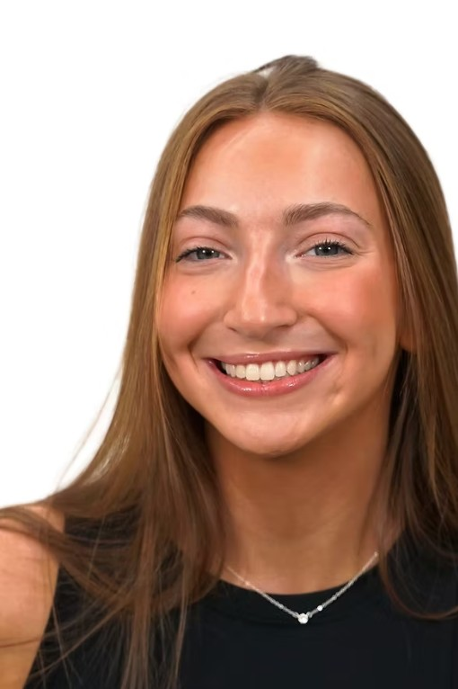

One Wish Project
Celebrating Birthdays, Delivering Hope.

Hannah Finn
Founder
At 14, when I started high school, I wanted to set some new goals for myself. Working hard to get good grades and challenging myself in new ways were my priorities. My mother always encouraged me and my two older brothers to get involved in a community-related service that would provide us with opportunities to help others who are experiencing difficulties in life. I knew this was not only a great opportunity to get involved in something meaningful but a way to break out of my comfort zone. I chose to use my love for baking to celebrate the birthdays of children living in homeless shelters.
For as far back as I can remember, my parents always made me feel special on my birthdays. Not all children are as fortunate as I have been. The town I have grown up in is less than two miles from one of the poorest cities in Massachusetts where there are dozens of homeless shelters. I know that the families who live there struggle to provide a home, food, and security for their children, let alone a birthday party. I can only imagine the stress that must fill their lives daily. One Wish Project was born from my idea that I would celebrate the birthdays of these children who are living in circumstances that are beyond their control. Along the way, I hope I can alleviate just a little stress off the shoulders of the parent(s) who just wants to see his/her child happy and feeling extra special on their birthday.
Education
B.A. Communications
University of Massachusetts Amherst, May 2024
Awards
- American Red Cross of Massachusetts, Youth Hero Award
- The Prudential Spirit of Community Awards, Bronze Award
- Boston Celtics, Heroes Among Us
- MaryJo Brown Foundation, Grand Winner
- Sonia Schreiber Weitz Upstander Award Finalist
Contact
Hannah at hannah@onewishproject.us
Claudia Mintz
Executive Director and Hannah's Mom
Claudia has been part of One Wish Project from the beginning. While Hannah was busy making the most amazing birthday cakes in their Andover home, Claudia assisted Hannah with all the things that a 14-year-old girl could not do herself. Claudia opened a bank account to accept donations, drove Hannah to the supermarkets for cake ingredients and the toy stores, and of course, accompanied Hannah to all the shelter deliveries.
As the organization continued to grow and Hannah was beginning the transition process to college in the Fall of 2020, One Wish Project became a volunteer-based organization and Claudia took over the day-to-day responsibilities of the organization.
Today, Claudia is One Wish Project's Executive Director focusing on Strategic Development and growth.
Contact
Who We Serve
Lazarus House
Lawrence
"The Home"
Walpole, MA
La Casa Nueva Vida
Lawrence
Department of Children and Family Services
Salem, MA
Emmaus House
Haverhill, MA
Department of Children and Family Services
Lawrence
La Casa Nueva Vida
Jamaica Plain, MA
Department of Children and Family Services
Haverhill
Citizens Inn
Peabody, MA
Community Teamwork, Inc.
Lowell, MA
Department of Children and Family Services
Greater Lowell
Department of Children and Family Services
Lynn
Housing Families
Malden, MA
The Lotus House
Lynn, MA